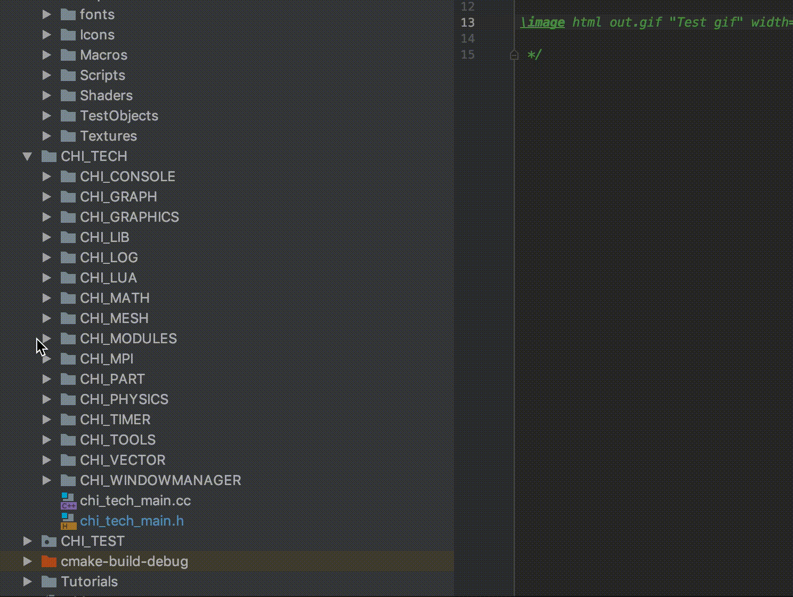

The underlying build system used by ChiTech is cmake and its entry point is the CMakeLists.txt file located in the root directory.
So you want to add your own code
Step 1 - Create your directory
Create a directory where you want to add your code. For example, let us suppose you want to add a new module. Add a directory to the CHI_TECH/CHI_MODULES folder:

Creating a new directory
Step 2 - If there is no CMakeLists.txt, create one
In the folder you just created, make a file called "CMakeLists.txt" and add the following code to it
file (GLOB_RECURSE MORE_SOURCES
"${CMAKE_CURRENT_SOURCE_DIR}/*.cc")
set(SOURCES ${SOURCES} ${MORE_SOURCES} PARENT_SCOPE)
This code will get executed by cmake and will recursively find all files with a .cc extension and compile it.
Step 3 - Create your source code
Create appropriate headers and source code.
Step 4 - Add the folder to the master CMakeLists.txt
The final step is to add the folder you created to the master CMakeLists.txt document contained in the root folder. If the new folder is already recursed by a higher level CMakeLists.txt file then this step is not needed.
Look for the line with comment "Define source directories" and your folder to the "add_subdirectory" logic:
#================================================ Define source directories
set(SOURCES "${CHI_TECH_DIR}/chi_tech_main.cc")
add_subdirectory("${CHI_TECH_DIR}/CHI_LUA")
add_subdirectory("${CHI_TECH_DIR}/CHI_MATH")
add_subdirectory("${CHI_TECH_DIR}/CHI_PHYSICS")
add_subdirectory("${CHI_TECH_DIR}/CHI_GRAPH")
add_subdirectory("${CHI_TECH_DIR}/CHI_TIMER")
add_subdirectory("${CHI_TECH_DIR}/CHI_TOOLS")
add_subdirectory("${CHI_TECH_DIR}/CHI_MESH")
add_subdirectory("${CHI_TECH_DIR}/CHI_MPI")
add_subdirectory("${CHI_TECH_DIR}/CHI_LOG")
add_subdirectory("${CHI_TECH_MOD}/CHI_MONTECARLON")
add_subdirectory("${CHI_TECH_MOD}/CHI_DIFFUSION")
add_subdirectory("${CHI_TECH_MOD}/CHI_NPTRANSPORT")
add_subdirectory("${CHI_TECH_MOD}/MyTestModule")
Step 5 - Include headers and use the code
That's it! The cmake system needs to be run again by executing the configure script.
And your code will be linked in. Now just make as usual.
- Date
- Aug 19, 2019